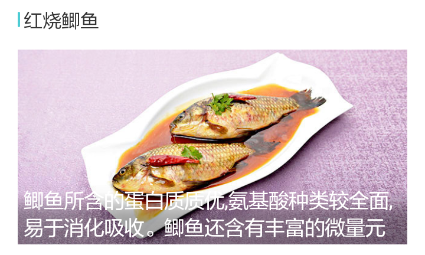
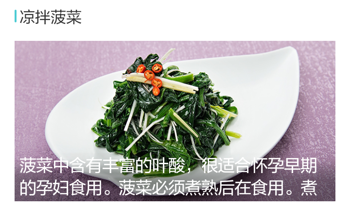

孕期食谱
孕期食谱
孕1-3月
怀孕的1-3月，孕妇可能并不知晓，但是既然你已经做好了迎接宝宝的准备，膳食要做到以下几点。 1、规律饮食，定时定量。 2、营养全面均衡。 3、避免辛辣油腻食物。 4、戒烟戒酒，减少咖啡的摄入。


孕4-6月
这个阶段孕妈妈的腹部慢慢变大，孕味开始显现。胎儿这个时候成长速度加快，进入孕中期，饮食也应做适当调整。 1、孕中期孕妇对热量的要求要高出非孕期25%。适当增加热量的摄入，避免营养不良或缺乏的影响。 2、避免过多脂肪和过分精细的饮食，应遵循“吃得多不如吃得好”的原则。 3、增加铁的摄入量，防止妊娠期缺铁性贫血。
孕7-9月
孕妈妈即将临产，身体变得很沉重，孕妈也容易出现便秘、烧心等消化道不适的症状，在膳食上，孕妈要注意以下几点。 1.补充营养素—膳食纤维，膳食合理搭配。 2.补充多种维生素。 3.饮食上可以多餐少食，缓解胃肠不适。 4.控制盐的摄入。